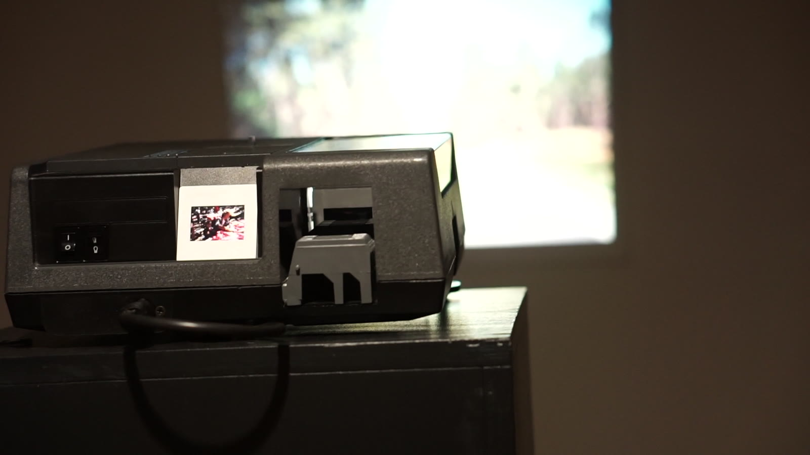
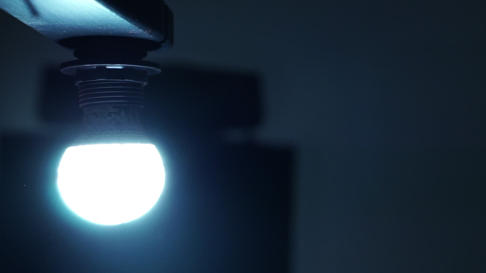
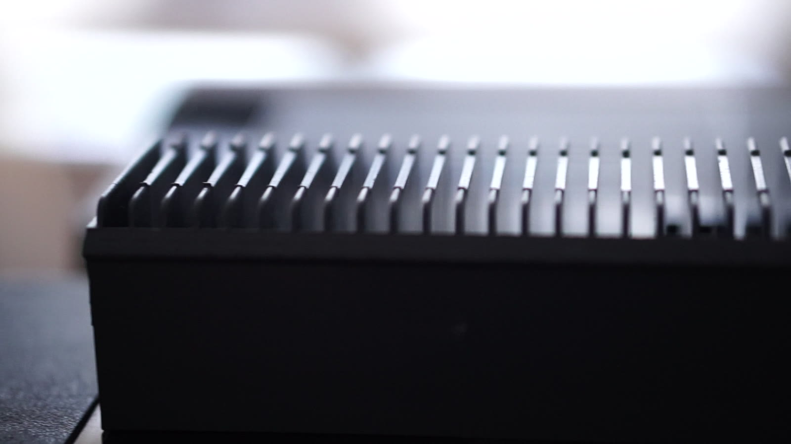
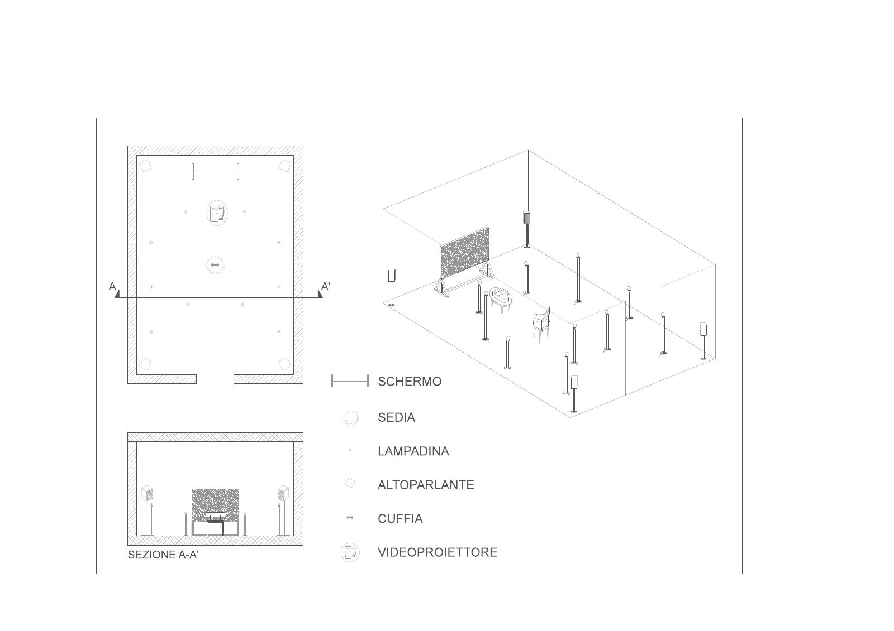

Mnème
Mnème mette in relazione due differenti tipologie di spazio sonoro — uno creato attraverso una spazializzazione quadrifonica, l'altro attraverso la binaurale — e la relazione che questi due ambienti hanno con la memoria, ponendo come concetto base dell'installazione lo spazio e il tempo dello spettatore.
Due spazi completamente diversi vengono ricreati in uno stesso luogo, portando il visitatore a riflettere sulla relazione fra la sfera dell'individuo e quella della collettività: dell'individuo, perché soggetto che percepisce se stesso anche attraverso la propria memoria; della collettività, perché portatore di convinzioni condivise con la dimensione sociale grazie a una comune memoria storica.
Arduino, Raspberry Pi, lampadine LED, proiettore di diapositive 35 mm, diapositive dell'archivio di famiglia dell'artista (metà anni '80 – metà anni '90), battito cardiaco spazializzato.




- Anno
- 2018
- Luogo
- Martini Elettrico, Conservatorio G.B. Martini, Bologna
- Ruolo
- Ideazione, composizione, realizzazione
- Video
- youtu.be/NM-z64ssNDE